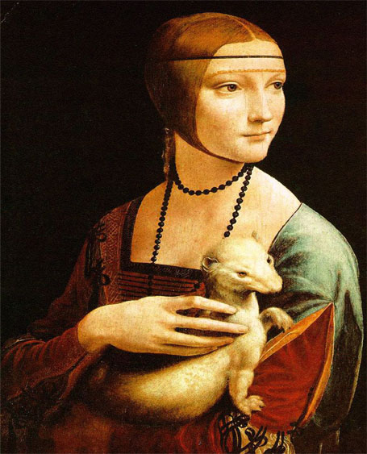

Fue realizado como parte del programa de Ludovico Sforza para la ampliación y nuevo decorado del complejo dominico de Santa Maria delle Grazie en Milán. Realizada entre 1494 y 1498.

La Dama del Armiño
Al romper con la tradición de pinar de perfil alos modelos de alto rango social, "La Dama del Armiño" ocupa un lugar destacado en el concepto revolucionario del arte del retrato. Aparece en tres cuartos de perfil, girando hacia su izquierda como si reaccionara, con ojos brillantes y un atisbo de sonrisa a alguien o algo que se encuentra fuera del marco del cuadro. La modelo: Cecilia Gallerani, amante de Ludovico Sforza.
La Gioconda / Mona Lisa
Ejemplo paradigmático del genio de Leonardo, así como de la pintura renacentista. Su modelo fue Lisa Gherardini, esposa del comerciante de sedas Francesco del Giocondo. Lo empezó a pintar en 1503 y aún estaba en su poder al momento de su muerte en 1519. La actividad implícita en todos los aspectos del retrato genera un halo de misterio que ha dado a este cuadro, una fama sin precedentes.